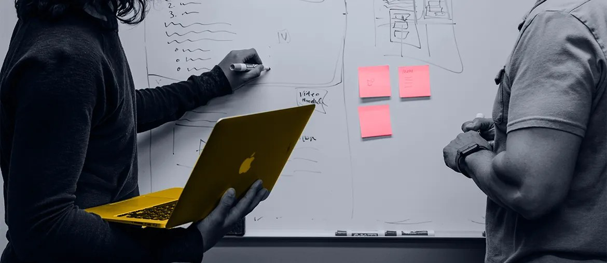

Map the flow
Map Avaya, contact center, Teams, and customer app links, then choose the first workflow that slows offers most.
For SPIE ICS Switzerland
Elinext can add a focused software squad to support SPIE ICS with Avaya, contact center, and hybrid collaboration delivery.
Why we're here: we saw SPIE hiring a Solution Architect UCC for Avaya. That signals active growth in UCC design, customer workshops, and offer support.
The UCC architect role says SPIE ICS is scaling customer design, sales support, and delivery around Avaya. The hard part is repeatability across Teams, M365, Webex, contact center, CRM, ERP, and databases. If each deal needs a fresh path, experts stay blocked in workshops and third-level issues. Delivery can slow while customer trust depends on stable voice and contact center service.
A dedicated squad works under your Solution Design or CTO lead. SPIE keeps architecture ownership, while Elinext adds steady delivery capacity.
Map Avaya, contact center, Teams, and customer app links, then choose the first workflow that slows offers most.
Build a small backlog for scripts, APIs, and test cases that make UCC pilots easier to repeat.
Automate smoke tests and release checks for UCC changes, with clear rollback steps for managed service teams.
Run weekly demos with Solution Design, sales, and operations, so offers match what engineers can support.
Elinext is a full-cycle software development company, active since 1997, with about 700 in-house specialists and no freelancers. We build web, backend, mobile, QA, DevOps, and AI/ML work for long-running enterprise programs. Our experience includes customers such as Siemens, Broadcom, Volkswagen, TRUMPF, and TUI. We work under ISO 9001 and ISO 27001 practices, which matters for managed services and secure customer systems. For SPIE ICS, we would add a compact squad that helps your experts move faster without losing control.

Telecom platform for internet providers, built to reduce support effort and improve customer communication.
Read the case study
Telecom DevOps work that made releases easier to configure while keeping quality and security checks in place.
Read the case study